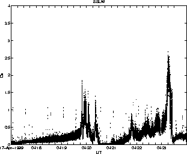
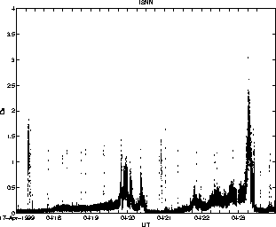
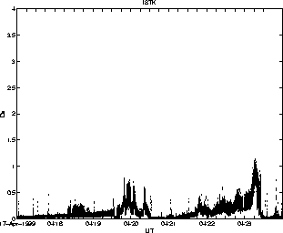
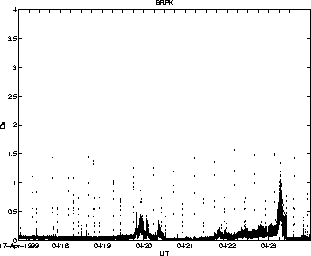

Method for calculating absolute displacement:
1. Calculate displacement spectrum.
2. Correct for geometrical spreading assuming far field surface waves: Multiply displacement spectrum by sqrt(r*wavelength) assuming surface wave speed of 2000 m/s.
3. Take mean of resulting amplitude spectrum between 0.8 & 10 Hz.
RESULT: Data for good stations (SSLW, ISNN, ISTK, BRPK) indicate data are undercorrected, suggesting body waves rather than surface waves, or near field rather than far field.
Distances: SSLS 5.3, SSLN 6.5, SSLW 10.1, ISNN 14.8, ISTK 17.0, BRPK 19.0, WTUG 28.9
 
 